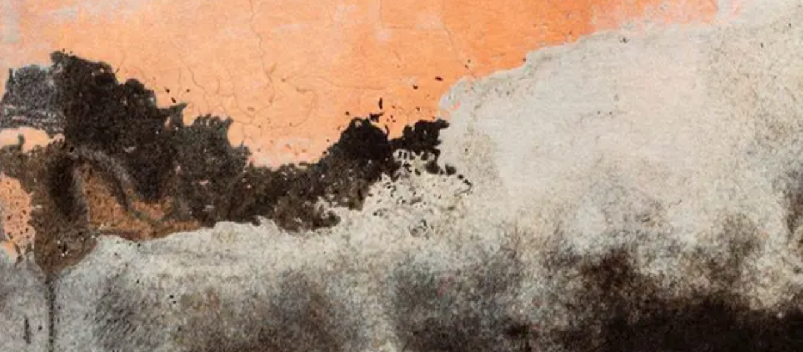

The Arts of Latin America with Sin Título Gallery
Attend the Spring 2022 Art Talk
 Finding the Universe in Oaxaca, The Wave, 2018
48” x 120” x 1”, Textile, wool felting
Saturday March 26, 2022
418 Sutter St, San Francisco, CA 94108
THE SPEAKERS
We are excited to present to you a chat with

Ernesto Quintanilla of Sin Título Gallery
Our Host and Curator

Diego Armando Plascenia Vega, our Moderator,
Artist and Engineer

Gary Goldberg, Artist, Photographer
and Professor Emeritus of the Arts
Gary is a photographer and a Professor Emeritus from Midwestern State University, Texas where he taught art for 27 years. His photographs have been transformed into textiles using a dry felting process at Taller Afelpado, San Agustín Etla, in Oaxaca. Each textile is hand-made by a team of three artisans.
Food and drinks will be provided!
RSVP, Let Us Know You're Coming!
Donations Are Appreciated!
Head to Patreon or
Paypal
Thank you!